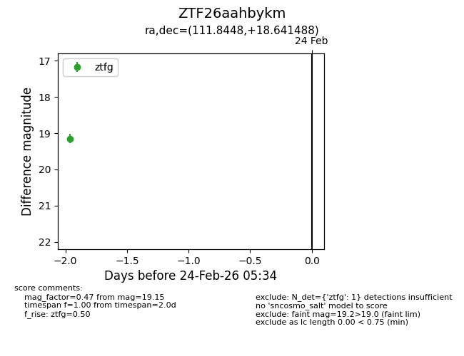
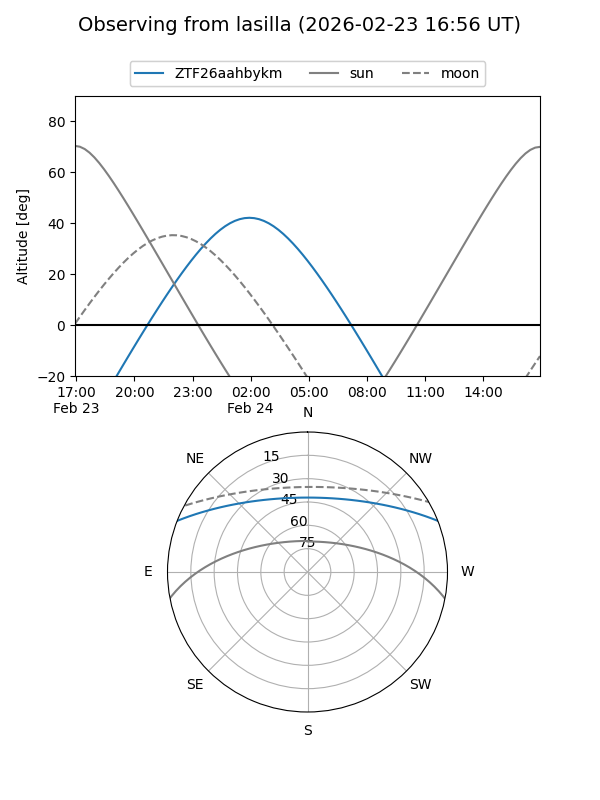
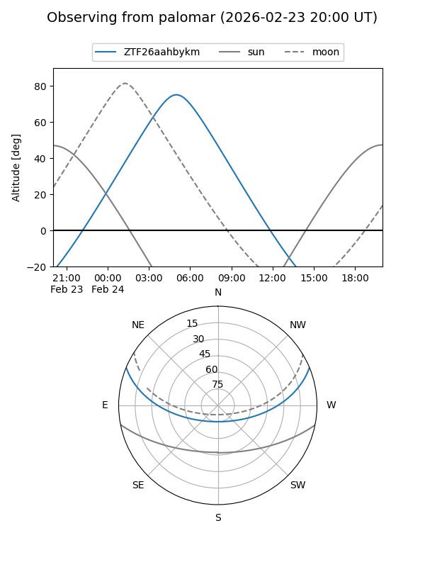

ZTF26aahbykm
Target ZTF26aahbykm at 2026-02-24 09:08
Aliases and brokers:
FINK: link
Lasair: link
ALeRCE: link
alt names
ZTF26aahbykm (ztf,fink_ztf)
Coordinates:
equatorial (ra, dec) = 111.8448,+18.64149
equatorial (HMS+DMS) = 07:27:22.76,+18:38:29.36
galactic (l, b) = (199.8780,+16.10873)
Flags:
Photometry:
last ztfg=19.15
1 ztfg detections
Lightcurve

Visibility


Additional plots